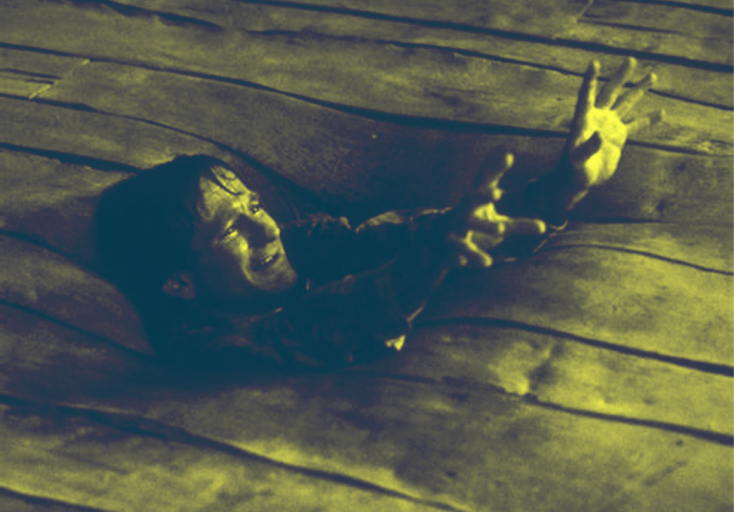
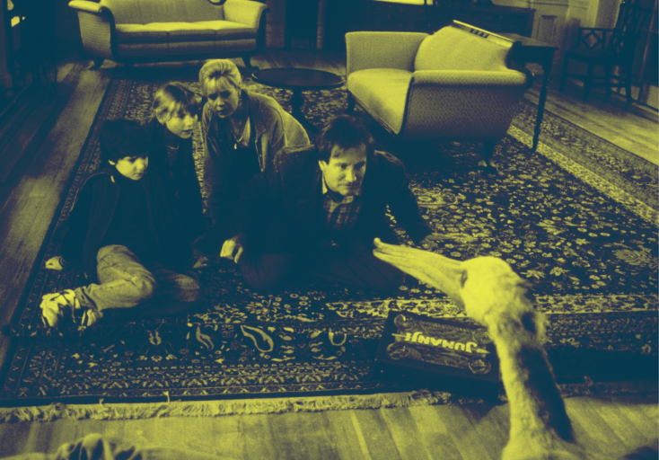
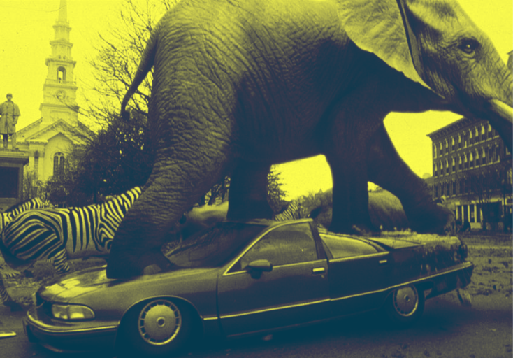

The Captivating World of Jumanji (1995): When Board Games Come to Life
The film Jumanji, directed by Joe Johnston and released in 1995, is an iconic adaptation of the eponymous book by Chris Van Allsburg, exploring the boundaries between games and reality. This classic adventure film plunges us into a world where a magical board game, filled with dangers and fantastical creatures, comes to life in a spectacular way. The story follows Judy and Peter, two children who discover an ancient board game called Jumanji. When played, the dangers and wonders of the game are unleashed into the real world, pulling the protagonists into a suspense-filled adventure. Their path is marked by challenges, including a confrontation with the formidable hunter Van Pelt, all while highlighting essential values such as courage, teamwork, and the importance of family.
Jumanji is not just for entertainment; it raises profound questions about the power of board games in our modern lives. The film emphasizes that every decision made in a game can have unexpected consequences, a concept that resonates particularly in the context of contemporary board games, which are often designed to encourage risk-taking and strategy. The game mechanics, which have become more diverse and complex over the years, are both a source of enjoyment and learning, offering players the opportunity to develop social and cognitive skills.
The impact of Jumanji on popular culture is also evident through its legacy in the gaming industry. Modern adaptations, including films and video games that followed, attest to the lasting influence of this adventure on new generations of players. The Jumanji series, especially with its new versions, explores a variety of themes and group dynamics, promoting cooperation and strategy—key elements found in today's board games.
By tackling the challenges posed by the game, the characters of Jumanji demonstrate that mutual support and communication are essential to overcoming obstacles. This dynamic has also found its place in modern games, which foster rich social interactions and collective experiences. In a game setting, collaboration between players often becomes necessary to advance, strengthening the bonds between friends and families.
The film also offers a reflection on the importance of imagination and adventure in our lives. By incorporating captivating narrative elements and breathtaking visuals, Jumanji becomes a powerful metaphor for the importance of play in our daily existence, emphasizing its role in personal and social development. Board games, as vehicles for human interaction and learning, can transform ordinary evenings into unforgettable moments.
By exploring the fascinating world of Jumanji, we can consider how this legendary game has influenced not only cinema but also the design of modern board games. The film reminds us that games are more than just entertainment; they are an adventure to experience together, a way to create lasting memories and develop valuable skills. Discover how Jumanji continues to inspire adventure tales and shape the future of board games, proving that the most captivating stories often come from the most unexpected games.
Movie Trailer:
Learn More:
Jumanji (the book)
Dive into the thrilling world of Jumanji, where a mysterious board game turns imagination into reality with every roll of the dice.
Joe Johnston
Learn about Joe Johnston, the director of Jumanji (1995), who blends adventure and fantasy to create captivating films and enrich modern cinema.
Poker Face - Lady Gaga
Dive into the world of Poker Face, Lady Gaga's iconic hit, which explores themes of love and mystery through an infectious melody and captivating lyrics, transforming the 2000s pop scene.